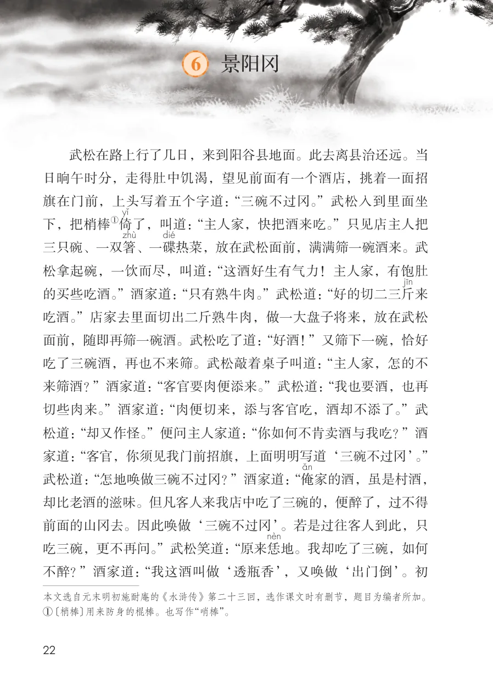
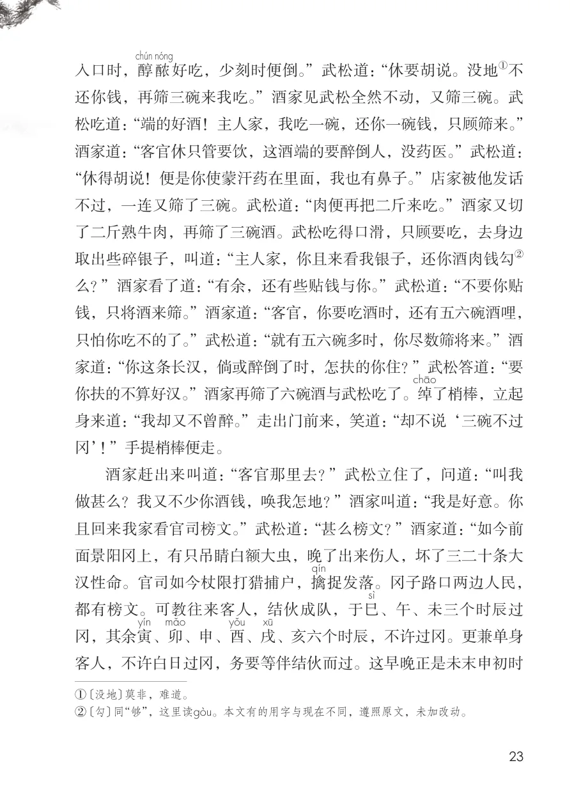
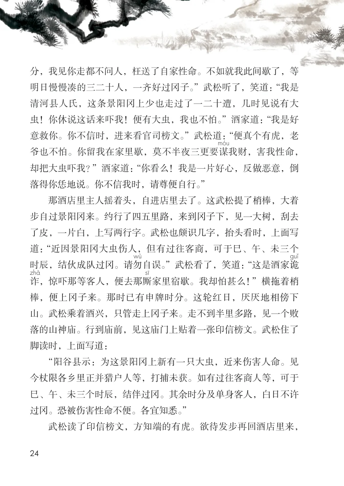
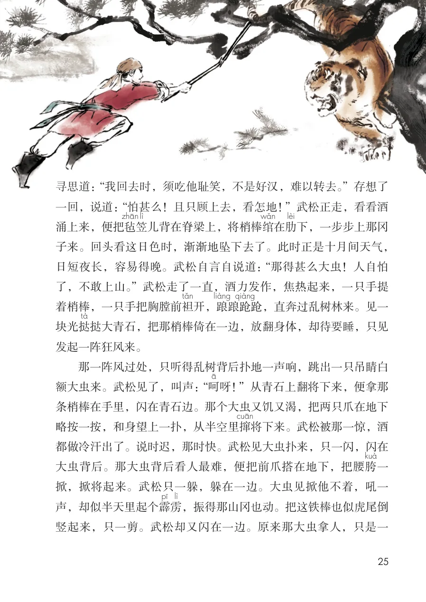
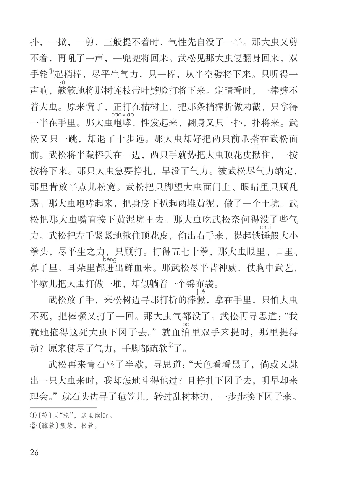
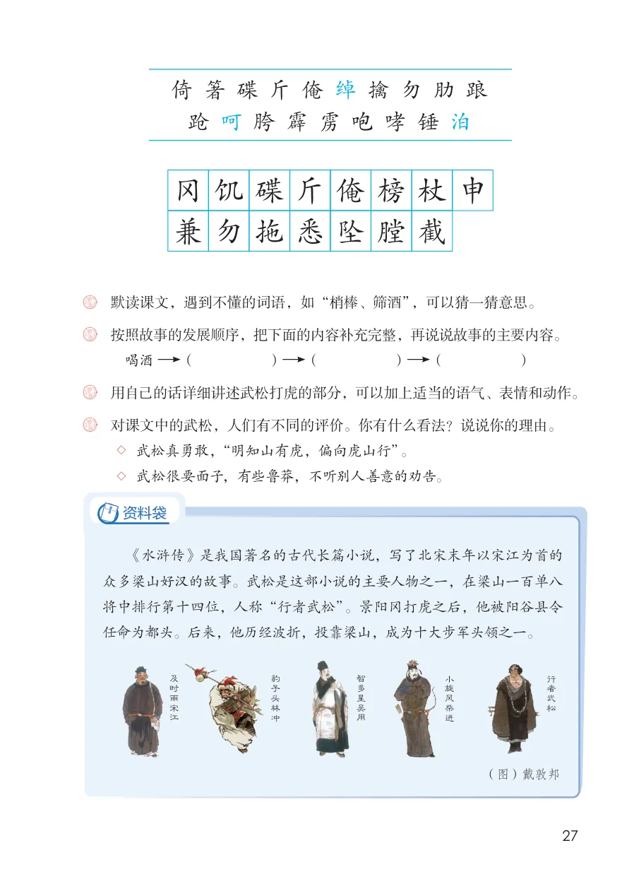

展开章节菜单
6 景阳冈
武松在路上行了几日，来到阳谷县地面。此去离县治还远。当日晌午时分，走得肚中饥渴，望见前面有一个酒店，挑着一面招旗在门前，上头写着五个字道：“三碗不过冈。”武松入到里面坐下，把梢棒
了，叫道：“主人家，快把酒来吃。”只见店主人把三只碗、一双箸
、一碟
热菜，放在武松面前，满满筛一碗酒来。武松拿起碗，一饮而尽，叫道：“这酒好生有气力！主人家，有饱肚的买些吃酒。”酒家道：“只有熟牛肉。”武松道：“好的切二三斤吃酒。”店家去里面切出二斤熟牛肉，做一大盘子将来，放在武松面前，随即再筛一碗酒。武松吃了道：“好酒！”又筛下一碗，恰好吃了三碗酒，再也不来筛。武松敲着桌子叫道：“主人家，怎的不来筛酒？”酒家道：“客官要肉便添来。”武松道：“我也要酒，也再切些肉来。”酒家道：“肉便切来，添与客官吃，酒却不添了。”武松道：“却又作怪。”便问主人家道：“你如何不肯卖酒与我吃？”酒家道：“客官，你须见我门前招旗，上面明明写道‘三碗不过冈’。”武松道：“怎地唤做三碗不过冈？”酒家道：“俺
家的酒，虽是村酒，却比老酒的滋味。但凡客人来我店中吃了三碗的，便醉了，过不得前面的山冈去。因此唤做‘三碗不过冈’。若是过往客人到此，只吃三碗，更不再问。”武松笑道：“原来恁
地。我却吃了三碗，如何不醉？”酒家道：“我这酒叫做‘透瓶香’，又唤做‘出门倒’。初
① 〔梢棒〕用来防身的棍棒。也写作“哨棒”。
查看教材原页（保留全部图片、注音与原始排版）

入口时，醇
好吃，少刻时便倒。”武松道：“休要胡说。没地
还你钱，再筛三碗来我吃。”酒家见武松全然不动，又筛三碗。武
松吃道：“端的好酒！主人家，我吃一碗，还你一碗钱，只顾筛来。”
酒家道：“客官休只管要饮，这酒端的要醉倒人，没药医。”武松道：
“休得胡说！便是你使蒙汗药在里面，我也有鼻子。”店家被他发话
不过，一连又筛了三碗。武松道：“肉便再把二斤来吃。”酒家又切
了二斤熟牛肉，再筛了三碗酒。武松吃得口滑，只顾要吃，去身边
取出些碎银子，叫道：“主人家，你且来看我银子，还你酒肉钱勾
么？”酒家看了道：“有余，还有些贴钱与你。”武松道：“不要你贴
钱，只将酒来筛。”酒家道：“客官，你要吃酒时，还有五六碗酒哩，
只怕你吃不的了。”武松道：“就有五六碗多时，你尽数筛将来。”酒
家道：“你这条长汉，倘或醉倒了时，怎扶的你住？”武松答道：“要
你扶的不算好汉。”酒家再筛了六碗酒与武松吃了。绰
了梢棒，立起
身来道：“我却又不曾醉。”走出门前来，笑道：“却不说‘三碗不过
冈’！”手提梢棒便走。
酒家赶出来叫道：“客官那里去？”武松立住了，问道：“叫我
做甚么？我又不少你酒钱，唤我怎地？”酒家叫道：“我是好意。你
且回来我家看官司榜文。”武松道：“甚么榜文？”酒家道：“如今前
面景阳冈上，有只吊睛白额大虫，晚了出来伤人，坏了三二十条大
捉发落。冈子路口两边人民，
汉性命。官司如今杖限打猎捕户，擒
都有榜文。可教往来客人，结伙成队，于巳
冈，其余寅
、亥六个时辰，不许过冈。更兼单身
客人，不许白日过冈，务要等伴结伙而过。这早晚正是未末申初时
② 〔勾〕同“够”，这里读gHu。本文有的用字与现在不同，遵照原文，未加改动。
查看教材原页（保留全部图片、注音与原始排版）

清河县人氏，这条景阳冈上少也走过了一二十遭，几时见说有大
分，我见你走都不问人，枉送了自家性命。不如就我此间歇了，等明日慢慢凑的三二十人，一齐好过冈子。”武松听了，笑道：“我是
虫！你休说这话来吓我！便有大虫，我也不怕。”酒家道：“我是好意救你。你不信时，进来看官司榜文。”武松道：“便真个有虎，老
我财，害我性命，爷也不怕。你留我在家里歇，莫不半夜三更要谋却把大虫吓我？”酒家道：“你看么！我是一片好心，反做恶意，倒落得你恁地说。你不信我时，请尊便自行。”
那酒店里主人摇着头，自进店里去了。这武松提了梢棒，大着步自过景阳冈来。约行了四五里路，来到冈子下，见一大树，刮去了皮，一片白，上写两行字。武松也颇识几字，抬头看时，上面写道：“近因景阳冈大虫伤人，但有过往客商，可于巳、午、未三个时辰，结伙成队过冈。请勿
自误。”武松看了，笑道：“这是酒家诡，惊吓那等客人，便去那厮
家里宿歇。我却怕甚么！”横拖着梢棒，便上冈子来。那时已有申牌时分。这轮红日，厌厌地相傍下山。武松乘着酒兴，只管走上冈子来。走不到半里多路，见一个败落的山神庙。行到庙前，见这庙门上贴着一张印信榜文。武松住了脚读时，上面写道：
“阳谷县示：为这景阳冈上新有一只大虫，近来伤害人命。见今杖限各乡里正并猎户人等，打捕未获。如有过往客商人等，可于巳、午、未三个时辰，结伴过冈。其余时分及单身客人，白日不许过冈。恐被伤害性命不便。各宜知悉。”
武松读了印信榜文，方知端的有虎。欲待发步再回酒店里来，
查看教材原页（保留全部图片、注音与原始排版）

寻思道：“我回去时，须吃他耻笑，不是好汉，难以转去。”存想了
一回，说道：“怕甚么！且只顾上去，看怎地！”武松正走，看看酒
儿背在脊梁上，将梢棒绾
下，一步步上那冈
涌上来，便把毡
子来。回头看这日色时，渐渐地坠下去了。此时正是十月间天气，
日短夜长，容易得晚。武松自言自说道：“那得甚么大虫！人自怕
了，不敢上山。”武松走了一直，酒力发作，焦热起来，一只手提
着梢棒，一只手把胸膛前袒
开，踉
跄，直奔过乱树林来。见一
挞大青石，把那梢棒倚在一边，放翻身体，却待要睡，只见
发起一阵狂风来。
那一阵风过处，只听得乱树背后扑地一声响，跳出一只吊睛白
额大虫来。武松见了，叫声：“呵
呀！”从青石上翻将下来，便拿那
条梢棒在手里，闪在青石边。那个大虫又饥又渴，把两只爪在地下
略按一按，和身望上一扑，从半空里撺
将下来。武松被那一惊，酒
都做冷汗出了。说时迟，那时快。武松见大虫扑来，只一闪，闪在
大虫背后。那大虫背后看人最难，便把前爪搭在地下，把腰胯
掀，掀将起来。武松只一躲，躲在一边。大虫见掀他不着，吼一
声，却似半天里起个霹
，振得那山冈也动。把这铁棒也似虎尾倒
竖起来，只一剪。武松却又闪在一边。原来那大虫拿人，只是一
查看教材原页（保留全部图片、注音与原始排版）

扑，一掀，一剪，三般提不着时，气性先自没了一半。那大虫又剪不着，再吼了一声，一兜兜将回来。武松见那大虫复翻身回来，双手轮声响，簌
簌地将那树连枝带叶劈脸打将下来。定睛看时，一棒劈不着大虫。原来慌了，正打在枯树上，把那条梢棒折做两截，只拿得
哮一半在手里。那大虫咆
，性发起来，翻身又只一扑，扑将来。武松又只一跳，却退了十步远。那大虫却好把两只前爪搭在武松面前。武松将半截棒丢在一边，两只手就势把大虫顶花皮揪
住，一按按将下来。那只大虫急要挣扎，早没了气力。被武松尽气力纳定，那里肯放半点儿松宽。武松把只脚望大虫面门上、眼睛里只顾乱踢。那大虫咆哮起来，把身底下扒起两堆黄泥，做了一个土坑。武松把那大虫嘴直按下黄泥坑里去。那大虫吃武松奈何得没了些气力。武松把左手紧紧地揪住顶花皮，偷出右手来，提起铁锤拳头，尽平生之力，只顾打。打得五七十拳，那大虫眼里、口里、
出鲜血来。那武松尽平昔神威，仗胸中武艺，半歇儿把大虫打做一堆，却似躺着一个锦布袋。
武松放了手，来松树边寻那打折的棒橛
，拿在手里，只怕大虫不死，把棒橛又打了一回。那大虫气都没了。武松再寻思道：“我
里双手来提时，那里提得就地拖得这死大虫下冈子去。”就血泊动？原来使尽了气力，手脚都疏软
武松再来青石坐了半歇，寻思道：“天色看看黑了，倘或又跳出一只大虫来时，我却怎地斗得他过？且挣扎下冈子去，明早却来理会。”就石头边寻了毡笠儿，转过乱树林边，一步步挨下冈子来。
② 〔疏软〕疲软，松软。
查看教材原页（保留全部图片、注音与原始排版）

倚箸碟斤俺绰擒勿肋踉
跄呵胯霹雳咆哮锤泊
榜杖申膛截悉坠兼勿拖
碟饥斤俺冈
用自己的话详细讲述武松打虎的部分，可以加上适当的语气、表情和动作。
《水浒传》是我国著名的古代长篇小说，写了北宋末年以宋江为首的
众多梁山好汉的故事。武松是这部小说的主要人物之一，在梁山一百单八
将中排行第十四位，人称“行者武松”。景阳冈打虎之后，他被阳谷县令
任命为都头。后来，他历经波折，投靠梁山，成为十大步军头领之一。
查看教材原页（保留全部图片、注音与原始排版）
